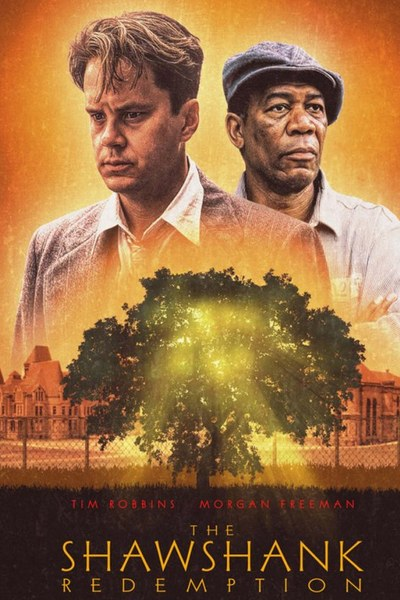
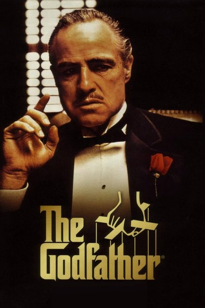
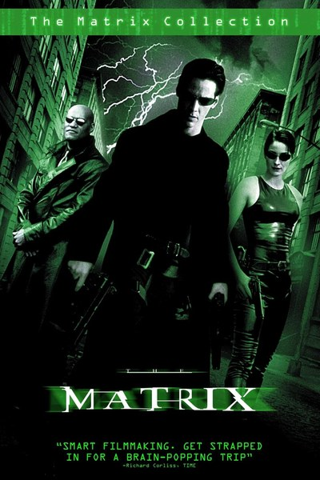
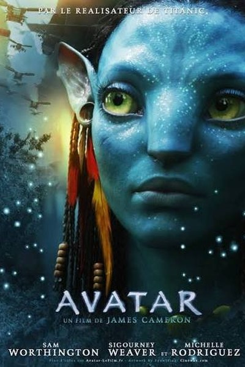
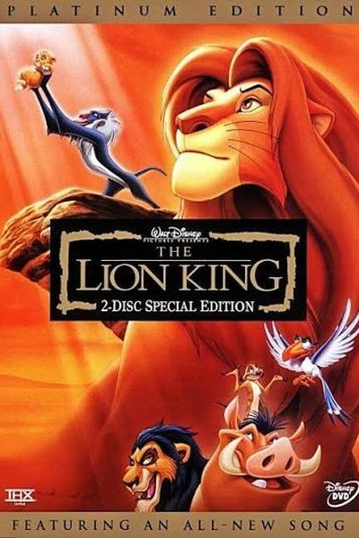
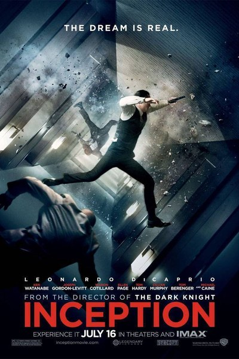
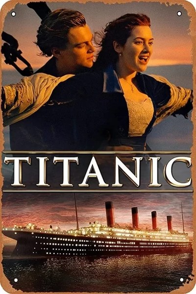
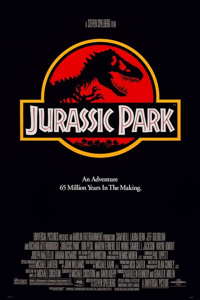

    
Голливуд — район Лос-Анджелеса в Калифорнии, ставший синонимом американской киноиндустрии. Первые студии появились здесь в 1910-х годах: мягкий климат, солнечная погода и разнообразные пейзажи рядом позволяли снимать почти круглый год. Знаменитая надпись на холме Гриффит-парка первоначально читалась как «Hollywoodland» и была рекламой жилого квартала.
Этот сайт — небольшой справочник по голливудским фильмам. Ниже — рассказы о нескольких картинах, а на странице «Таблица фильмов» собраны 50 известных лент с годом выхода, бюджетом, сборами и рейтингом, которые можно сортировать, фильтровать и использовать для построения графиков.
Вторая часть трилогии Нолана о Бэтмене. Бэтмен, комиссар Гордон и прокурор Харви Дент пытаются очистить Готэм от организованной преступности, но на их пути встаёт Джокер — хаос, который невозможно купить или запугать.
Роль Джокера принесла Хита Леджеру посмертный «Оскар». Картина стала одной из первых крупных игровых лент, часть которой снята камерами IMAX.

Дом Кобб — вор, крадущий идеи из снов. Ему предлагают невозможное: не украсть мысль, а внедрить её в сознание наследника корпорации, спустившись на несколько уровней сна.
Знаменитая сцена с вращающимся коридором снята без компьютерной графики — команда построила коридор на вращающейся платформе. Фильм получил четыре «Оскара» за операторскую работу, визуальные эффекты и звук.

История любви пассажиров разных классов на фоне гибели легендарного лайнера в апреле 1912 года. Для съёмок построили почти полноразмерную копию корабля и огромный бассейн в Мексике.
Лента получила 11 премий «Оскар», а её сборы первыми превысили миллиард долларов.

По роману Майкла Крайтона: учёные оживляют динозавров с помощью ДНК из древнего янтаря и открывают парк развлечений, где система безопасности даёт сбой.
Фильм соединил механических динозавров студии Стэна Уинстона и компьютерную графику Industrial Light & Magic и получил три «Оскара» за визуальные эффекты и звук.
Группа Б9124-09.03.04(1), Гайнулин Арсений, 2026
Данные о бюджетах и сборах округлены и носят справочный характер.